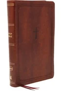

Welcome to Our Bible Bookstore
Here's a featured Bible verse:
For God so loved the world that he gave his one and only Son, that whoever believes in him shall not perish but have eternal life. - John 3:16 (NIV)
Here's a featured Bible verse:
For God so loved the world that he gave his one and only Son, that whoever believes in him shall not perish but have eternal life. - John 3:16 (NIV)
Discover the Perfect Bible for You Shop a large variety of Bibles at Books-A-Million. Discover the most popular versions of the Holy Bible including KJV, NIV, CSB, The New Testament, The Book of Enoch, and more. From Bible study guides for beginners to Bible charts, maps, and timelines, there is a large selection of resources to choose from for your Bible studies. Browse bestsellers including leather Bibles, large print Bibles, beginner's Bibles, children's Bibles, women's study Bibles, and other educational and inspirational Bible materials. Whether you are looking for a gift, a personal study tool, or a family treasure, you will find the right Bible for you at Books-A-Million. Shop online or visit your local store today and discover the power and beauty of God's word.